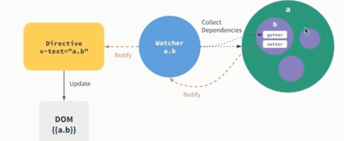

Web框架探究(Vue、Angular)
MVVM
MVVM 由以下三个内容组成
- View：界面
- Model：数据模型
- ViewModel：作为桥梁负责沟通 View 和 Model
在 MVVM 中，UI 是通过数据驱动的，数据一旦改变就会相应的刷新对应的 UI，UI 如果改变，也会改变对应的数据。这种方式就可以在业务处理中只关心数据的流转，而无需直接和页面打交道。ViewModel 只关心数据和业务的处理，不关心 View 如何处理数据，在这种情况下，View 和 Model 都可以独立出来，任何一方改变了也不一定需要改变另一方，并且可以将一些可复用的逻辑放在一个 ViewModel 中，让多个 View 复用这个 ViewModel。
在 MVVM 中，最核心的也就是数据双向绑定，例如 Angluar 的脏数据检测，Vue 中的数据劫持。
Angular中的双向绑定实现
Angular 当触发了指定事件后进入脏数据检测，这时期会调用$digest循环遍历所有的数据观察者，判断当前值是否和先前的值有区别，如果检测到变化的话，会调用$watch函数，然后再次调用$digest循环直到发现没有变化。所以这个过程可能会循环几次，一直到不再有数据变化发生后，将变更的数据发送到视图，更新页面展现。如果是手动对 ViewModel 的数据进行变更，为确保变更同步到视图，需要手动触发一次“脏值检测”。
脏数据检测虽然需要每次去循环遍历查看是否有数据变化，存在低效的问题，与Vue的双向绑定原理不同，但是脏数据检测能够同时检测出要更新的值，再去统一更新UI，这样也可以减少操作DOM的次数。
Vue2.0中的双向绑定实现
Vue2.0 中使用了 Object.defineProperty() 来实现双向绑定，通过这个函数可以监听到 set 和 get 的事件。所以Vue.js不支持IE8 以及更低版本浏览器
基本的Demo实现如下
<div> <input type="text" id="input"> <span id="text"></span> </div>
var obj = {}; Object.defineProperty(obj, 'prop', { get: function() { return val; }, set: function(newVal) { val = newVal; document.getElementById('input').value = val; document.getElementById('text').innerHTML = val; } }); document.addEventListener('keyup', function(e) { obj.prop = e.target.value; });
vue2.0就是通过 Object.defineProperty() 来劫持各个属性的setter，getter。再结合发布者-订阅者的方式，发布消息给订阅者，触发相应的监听回调。  在对数据进行读取时，如果当前有 Watcher（对数据的观察者，watcher 会负责将获取的新数据发送给视图），那将该 Watcher 绑定到当前的数据上(dep.depend()，dep 关联当前数据和所有的 watcher 的依赖关系)，是一个检查并记录依赖的过程。而在对数据进行赋值时，如果数据发生改变，则通知所有的 watcher(借助 dep.notify())，如上图。这样，即便是我们手动改变了数据，框架也能够自动将数据同步到视图。 完整的代码如下：
function observe(obj) { // 判断类型 if (!obj || typeof obj !== 'object') { return } Object.keys(obj).forEach(key => { defineReactive(obj, key, obj[key]) }) } function defineReactive(obj, key, val) { // 递归子属性 observe(val) let dp = new Dep() Object.defineProperty(obj, key, { enumerable: true, configurable: true, get: function reactiveGetter() { console.log('get value') // 将 Watcher 添加到订阅 if (Dep.target) { dp.addSub(Dep.target) } return val }, set: function reactiveSetter(newVal) { console.log('change value') val = newVal // 执行 watcher 的 update 方法 dp.notify() } }) } class Dep { constructor() { this.subs = [] } addSub(sub) { // sub 是 Watcher 实例 this.subs.push(sub) } notify() { this.subs.forEach(sub => { sub.update() }) } } // 全局属性，通过该属性配置 Watcher Dep.target = null function update(value) { document.querySelector('div').innerText = value } class Watcher { constructor(obj, key, cb) { // 将 Dep.target 指向自己 // 然后触发属性的 getter 添加监听 // 最后将 Dep.target 置空 Dep.target = this this.cb = cb this.obj = obj this.key = key this.value = obj[key] Dep.target = null } update() { // 获得新值 this.value = this.obj[this.key] // 调用 update 方法更新 Dom this.cb(this.value) } } var data = { name: 'yck' } observe(data) // 模拟解析到 `{{name}}` 触发的操作 new Watcher(data, 'name', update) // update Dom innerText data.name = 'yyy'
但是Object.defineProperty()有其缺陷:
- 只能对属性进行数据劫持，所以需要深度遍历整个对象
- 对于数组不能监听到数据的变化(Vue中使用hack方法进行解决)
hack的实现
const arrayProto = Array.prototype export const arrayMethods = Object.create(arrayProto) // hack 以下几个函数 const methodsToPatch = [ 'push', 'pop', 'shift', 'unshift', 'splice', 'sort', 'reverse' ] methodsToPatch.forEach(function(method) { // 获得原生函数 const original = arrayProto[method] def(arrayMethods, method, function mutator(...args) { // 调用原生函数 const result = original.apply(this, args) const ob = this.__ob__ let inserted switch (method) { case 'push': case 'unshift': inserted = args break case 'splice': inserted = args.slice(2) break } if (inserted) ob.observeArray(inserted) // 触发更新 ob.dep.notify() return result }) })
Vue3.0
由于Object.defineProperty不能监听到数组变化，所以Vue3.0中使用了原生支持监听数组变化的es6中的Proxy
let onWatch = (obj, setBind, getLogger) => { let handler = { get(target, property, receiver) { getLogger(target, property) return Reflect.get(target, property, receiver) }, set(target, property, value, receiver) { setBind(value) return Reflect.set(target, property, value) } } return new Proxy(obj, handler) } let obj = { name: 'test' } let p = onWatch( obj, v => { document.querySelector('div').innerText = v }, (target, property) => { console.log(`Get '${property}' = ${target[property]}`) } ) p.name = 'zhongwq' // bind `value` to `zhongwq` p.name // -> Get 'name' = test